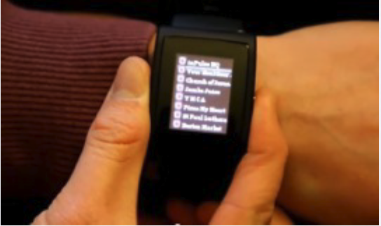
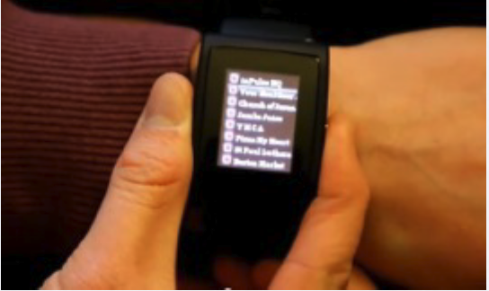
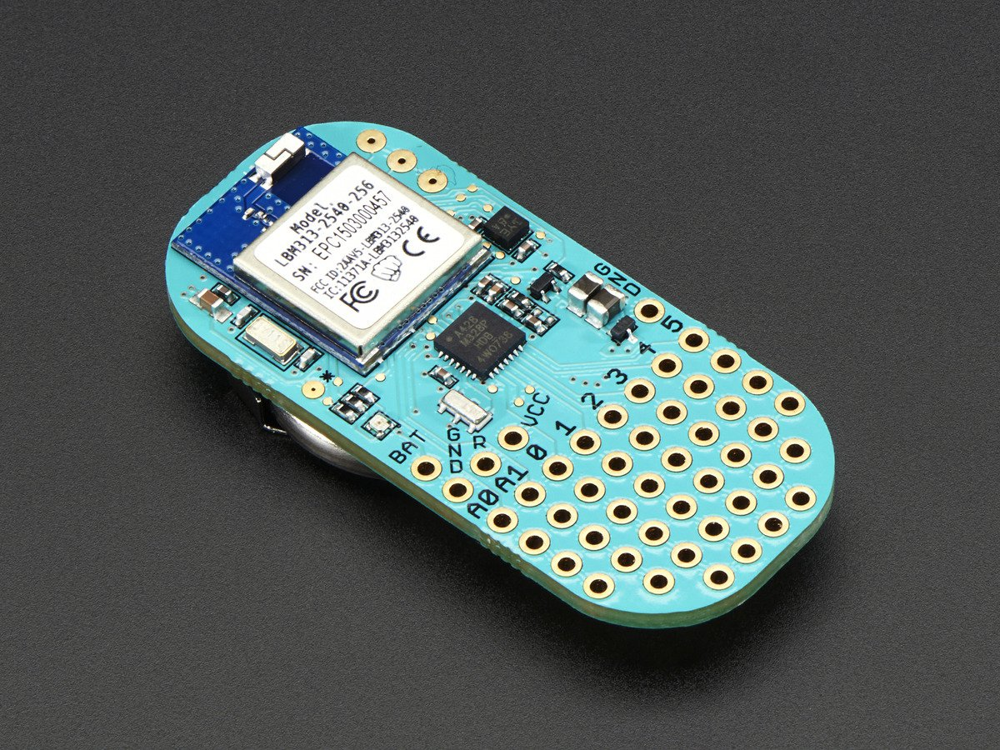
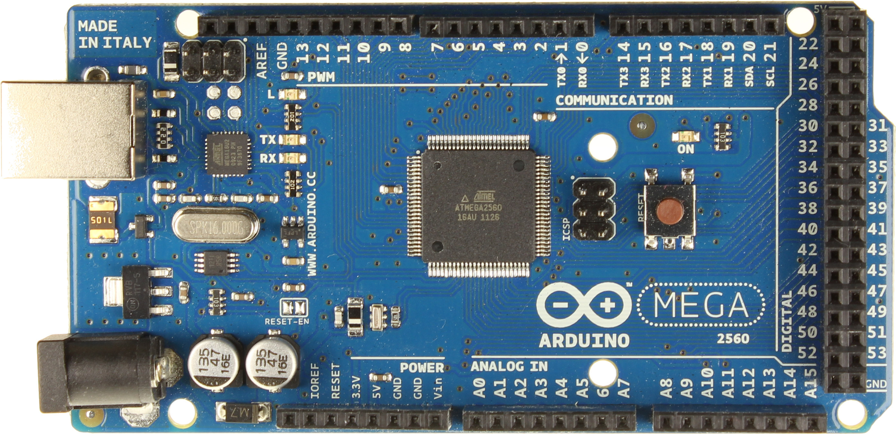
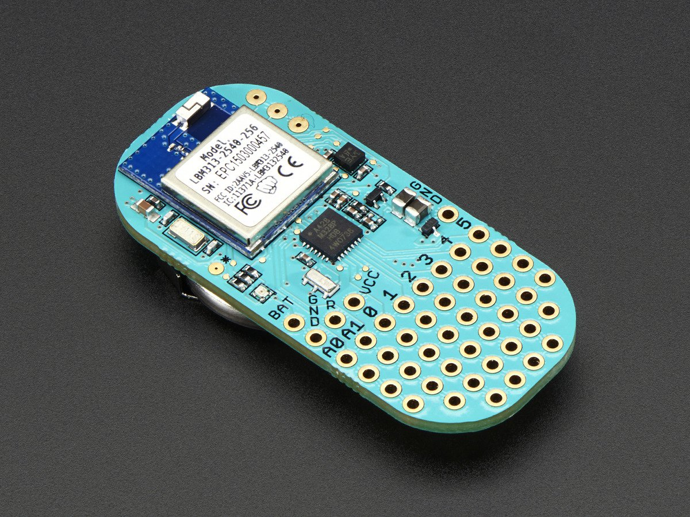
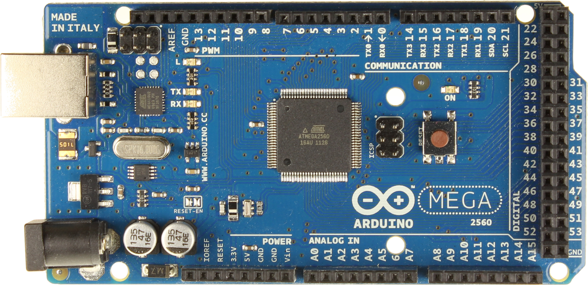
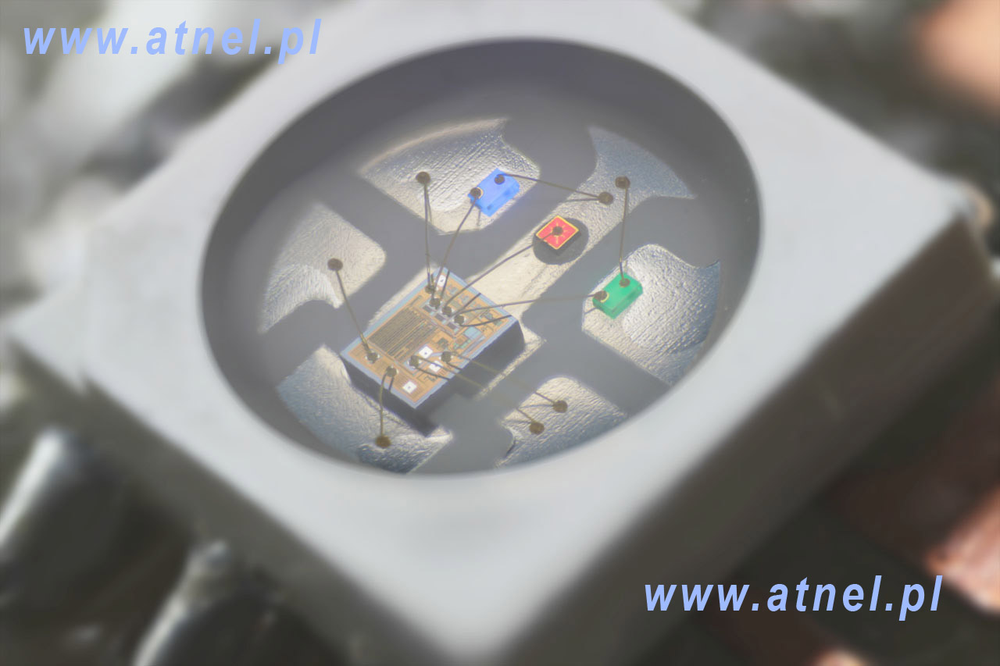
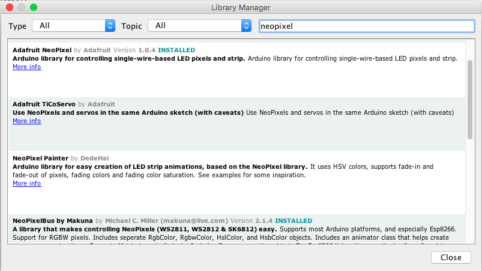

LED Workshop
LED Workshop
LED Workshop
LED Workshop
LED Workshop
Slides are here: http://mhellar.github.io/ga_physcomp/1
Grab the code here: http://bit.ly/2c5wYej
- Introductions
- Housekeeping and Soldering Warmup
- Introduction to the ESP8266
- Introduction to addressable LED's
- Programming addressable LED's with the Neopixel and FastLED Libraries
- Wireless Control
- Modify and install a hybrid mobile app to control your installation.
- Powering an LED installation.
Topics for today:
Houskeeping
- Connect to wifi
- Intstall This Driver: http://bit.ly/1FGNigh
- Intstall Arduino: http://bit.ly/1R2xniM
- Install nodeJS, www.nodejs.org
Project 1: Soldering
*Note: Leave 2 rows on the side with black socket and 1 on top!
Using the helping hands, align 3 header pins on the pad, heat and solder.

Using the short length of wire, solder brown to -, orange to + and red to D
Solder 3 header pins(the short end) to the other end of wire
The final result
In todays workshop we will be working with Adressable LED's and something called a microcontroller to program them. Let's talk about that.
WHAT IS A MICROCONTOLLER:
We know what a computer looks like. It usually has a keyboard, monitor, CPU (Central Processing Unit), printer, and a mouse. These types of computers, like the Mac or PC, are primarily designed to communicate (or “interface”) with humans.
WHAT IS A MICROCONTOLLER:
There are also small computers all around,quietly running programs and quietly doing calculations. These computers are in your car, on the Space Shuttle, a small toy, and maybe even inside your refrigerator.
 



WHAT IS A MICROCONTOLLER:
We call these devices “microcontrollers”. Micro because they’re small, and controller because they “control” machines, gadgets, whatever!
They’re cool because, you can build a machine or device, write programs to control it and then let it work for you automatically. And they are cheap!
WHAT IS A MICROCONTOLLER:
Typically with a microcontroller you upload 1 program and it executes it over and over very efficiently without the overhead of a large operating system
 





ARDUINO

WHAT IS ARDUINO:
Arduino is an open source physical computing platform based on a simple input/output (I/O) board and a development environment that implements the Processing language (www.processing.org).
Arduino can be used to develop standalone
interactive objects or can be connected to software on your computer (such as Flash, Processing, NodeJS or Max/MSP). !
Arduino is composed of two major parts:
- The Arduino board, which is the piece of hardware you program to control your projects.
- The Arduino IDE, the piece of software you run on your computer. You use the IDE to create a sketch(a program) that you upload to the Arduino board. The sketch tells the board what to do.
KEY TERMS
- “sketch” – a program you write to run on an Arduino board
- “pin” – an input or output connected to something. e.g. output to an LED, input from a knob.
- “digital” – value is either HIGH or LOW. (aka on/off, one/zero) e.g. switch state
- “analog” – value ranges, usually from 0-255. e.g. LED brightness, motor speed, etc.
THE ARDUINO HARDWARE
The Arduino board is a microcontroller board, which is a small circuit (the board) that contains a whole computer on a small chip (the micro- controller). This computer is at least a thousand times less powerful than the MacBook I’m using to write this, but it’s a lot cheaper and very useful to build interesting devices. !
THE ARDUINO SOFTWARE (IDE)
The IDE (Integrated Development Environment) is a program running on your computer that allows you to write sketches for the Arduino board in a simple language modeled after the Processing (www.processing.org) language.
THE ARDUINO SOFTWARE (IDE)
The magic happens when you upload the sketch to the board: the code that you have written is translated from the Arduino C-like language, and is compiled into a language that the micro controller understands.
This last step is quite important, because it’s where Arduino makes your life easy by hiding away as many of the complexities of programming microcontrollers.
The programming cycle on Arduino is basically as follows:
- Plug your board into a USB port on your computer.
- Write a sketch that will make your board do something.
- Upload this sketch to the board through the USB connection and wait a couple of seconds for the board to restart.
- The board executes the sketch that you wrote.
THE ARDUINO HARDWARE
Back in 2007, there was one aduino hardware board that we could program with the arduino IDE, now it supports many many boards
The Microcontroller we will be using today is called the ESP8266 and we will be using the Arduino programming environment to program it.

The ESP8266 is a low-cost Wi-Fi chip with full TCP/IP stack and MCU (Micro Controller Unit) capability produced by Shanghai-based Chinese manufacturer, Espressif Systems.
Specifically, we will be using the ESP8266 based Adafruit Huzzah
The Huzzah is like a mini Arduino with Wifi, that is $16.00!
Getting Set up:
- First install the USB driver SiLabs serial driver
Getting Set up:
- Next go to the Arduino Preferences

Enter http://arduino.esp8266.com/stable/package_esp8266com_index.json into Additional Boards Manager URLs
Getting Set up:
- Next, use the Board manager to install the ESP8266 package.

Set board to Adafruit Huzzah and Set port to SLAB..etc
Upload Blink from the code folder
Great! We will come back to more programming later now lets talk about addressable LEDs
Introduction to Addressable LEDS


Basic LEDS Need a lot of Wiring

Addressable LEDs provide circuitry to communicate serially and they typically have RGB
Each LED has a chip to receive, decode, drive LED’s and propagate data

They are chainable, fairly cheap and have their own resistors etc..

You can drive 10000's from 1 microcontroller
The most common today are called the WS2812, the chip was created by the World Semi Corp

Datasheet
Adafruit has branded these Neopixels

You can get them for half the price on Ebay as ws2812's

These have a 5v, GND and DIN pin

Connect 5v to 5v, GND to GND and DIN to Pin6
Import the NeoPixel Library

Import the NeoPixel Library
Let's try some examples and write our own code!
Plug the LiPo battery into the socket
Using jumper wires, make these connections. You will have to push the battery wires aside a bit
Plug in the single LED 5v -> Batt,DI -> 2,GND -> GND
Let's upload firstlight from the code folder
Plug in the USB and upload firstlight
While we are here go into Arduino Preferences and turn on line numbers
Now let connect our strip 5v -> Batt,DI -> 2,GND -> GND
It's only lighting up 1 led, we need to change that on line 16
Adafruit_NeoPixel strip = Adafruit_NeoPixel(1, PIN, NEO_GRB + NEO_KHZ800);
Adafruit_NeoPixel strip = Adafruit_NeoPixel(28, PIN, NEO_GRB + NEO_KHZ800);
Coding Excercise
Let's upload simple from the code folder
Let's upload simple_forloop from the code folder
Let's upload simple_forloop_rand from the code folder
Let's upload simple_forloop_rand_function from the code folder
Let's upload simple_forloop_rand_function from the code folder
Let's upload simple_forloop_func_w_args from the code folder
Let's upload simple_forloop_func_w_argsfl from the code folder
Write you own!
Wifi
FastLED
Fast LED LibraryAPA102
APA102 aka “Superled”